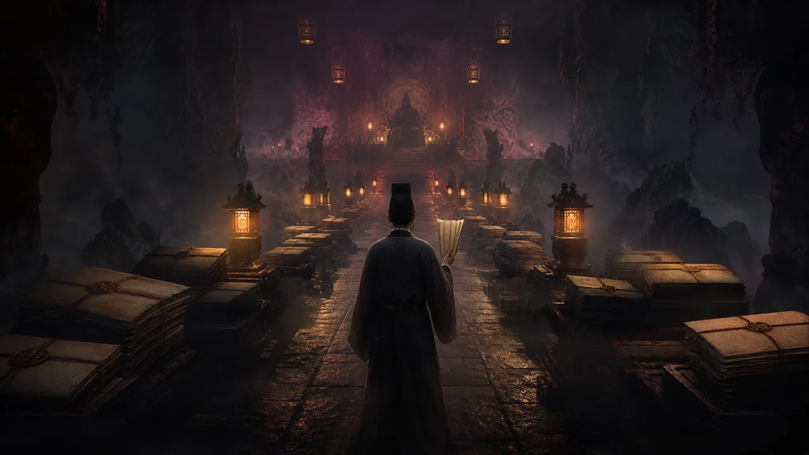

原典入口与来源核验
本栏先定位原典：原题《席方平》，见聊斋志异。本站不在未逐篇校勘前整篇搬运原文；需要核对原典时，请以公开来源链接和后续版本说明为准。
- 原题
- 席方平
- 出处
- 聊斋志异
- 作者
- 蒲松龄
- 年代
- 清代
- 处理方式
- 公版原典导读 + 司法主题解读
- 复核日期
- 2026-07-06
公版古籍来源；本站为现代导读、情节重述与评论，不作为校勘底本。

本栏先定位原典：原题《席方平》，见聊斋志异。本站不在未逐篇校勘前整篇搬运原文；需要核对原典时，请以公开来源链接和后续版本说明为准。
公版古籍来源；本站为现代导读、情节重述与评论，不作为校勘底本。
席方平为父申冤，一路追到阴司。故事可怖之处不是鬼神，而是连另一个世界也可能层层失灵。
《席方平》的重量和许多轻灵篇目不同。它不是一次夜遇，也不是一场幻术，而是一条不断上诉、不断受挫、又不断继续的路。
故事最寒冷的地方在于，阴司并不自动代表正义。人间有权势、贿赂和冤屈，阴间也可能复制这些结构。蒲松龄把读者对“另一个世界会还公道”的期待打碎了。
席方平的坚持因此变得格外重要。他不是因为知道一定会赢才走下去，而是在一次次被压下后仍然拒绝承认冤屈就该沉没。
这篇适合做站内较长的深度文章。它可以解释古典志怪中的阴司想象，也可以讨论蒲松龄为什么反复写制度失灵、读书人的不平和底层申诉的艰难。
写作时要避免把它简化成爽文式复仇。真正有力量的是过程中的痛苦、羞辱和不确定。读者需要看到，一个人的不退让如何在不可靠的系统里制造出微弱但真实的裂缝。
页面结构可以采用“申诉阶梯”：人间、初入阴司、受刑、再告、转机。每一级都标注人物处境和权力关系，让复杂故事更容易读。
它也适合作为 AdSense 审核前的高价值内容样张，因为它不依赖猎奇关键词，而是有明确主题、公共性和原创评论空间。
正式上线前，应核对具体底本并补充来源链接。如果后续引用研究资料，也需要以简短摘要方式处理，不大段搬运现代论文或书籍。
《席方平》应该是站内第一批真正长文之一。它有明确公共议题：冤案、申诉、制度失灵和迟来的公正。这样的文章比单纯鬼怪故事更容易体现原创编辑价值。
扩写时可以加入“阴司并非天然正义”这一节，解释为什么蒲松龄让另一个世界也带有人间问题。这个角度能把故事从情节复述提升到文学和社会想象层面。
页面还可以补一个“申诉路线图”，把席方平每一次受阻和继续推进列出来。读者会更清楚这篇的压迫感来自重复失败，而不是单一恐怖场面。
《席方平》的文章必须写出重复受阻带来的压迫感。一次失败只是情节，反复失败才形成制度感。席方平每往上一层，读者都以为公正会近一点，结果发现阻力也随之换了面孔。
这篇的阴间不是现实的反面，而像现实的投影。它保留了官署、等级、审问和惩罚，也保留了人间最让人绝望的部分：冤屈并不会因为换了世界就自动被听见。
扩写时可以专门设置“为什么不是复仇爽文”一节。席方平的力量不来自轻松胜利，而来自在痛苦中不撤回诉求。文章如果写得太快，反而会削弱这篇真正沉重的地方。
它也适合作为站内高质量样张：有明确来源，有强主题，有原创分析空间，也能连接司法想象、阴司叙事和蒲松龄个人不平。这样的页面比单纯故事库更接近可长期运营的内容资产。
《席方平》页面可以加入“申诉路线图”，用很清楚的层级展示他为何一次次继续。这个模块既方便读者理解长篇情节，也能体现本站不是随手摘抄，而是在重新组织阅读路径。
这篇的语气应保持克制。它很容易被写成激烈控诉，但真正有力量的是冷静展示每一层失灵。越冷静，读者越能感到那种无处安放的冤屈。
后续扩写时，可以把每一次上诉的成本写清楚。读者只有理解席方平付出了什么，才会明白这篇的核心不是奇案反转，而是冤屈在层层阻力中仍不肯消失。
一篇写申诉如何受阻，一篇写判官如何改写命运。
冤案、考核和官署共同说明阴间常复制人间规则。
一篇写压力向下传导，一篇写冤屈向上申诉。